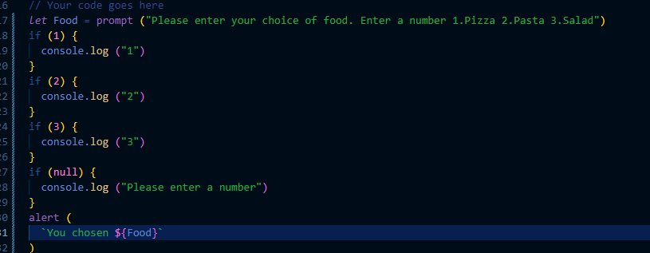

Question:
Organizational question. Can we look for an internship during the course or after the course? And whether this course is enough to get the first job
Answer:
I would recommend to learn first how to crawl then you can learn how to run ;)

Question:
The specification says, a main tag should always be followed by a h1, but sometimes you don't have a heading, start with something else. Diego did not use an h1 in his last coding lesson as well. Is it bad style if you not use h1 as first successor, or does it not matter actually? Thank you!
Answer:
In the context of a beginner student learning about HTML, it's not an absolute requirement to always add an h1 directly below the main tag. The specification recommends this structure for accessibility and semantic reasons, as it helps provide a clear hierarchical structure to web content. When a screen reader or search engine parses a webpage, it relies on headings to understand the organization and hierarchy of the content. Placing an h3 directly below the main tag signifies the main heading of the content within the main section. However, there are situations where you might not have a meaningful h1 heading to place directly under main, especially when the content doesn't require a heading. In such cases, you can still use other heading levels, such as h2, h3, etc., based on the content's structure. The key takeaway is that while it's a good practice to use headings for semantic structure and accessibility, there might be scenarios where you don't need a main heading immediately after the main tag. It's essential to balance adherence to best practices with the actual needs and structure of your content. Specificity Reference
Question:
Can elements directly be addressed with their tag name to add styles in CSS? Like .class; p or ul or footer, or shall we always add a class/id to target them? Is it bad style to target tags directly? Thank you!
Answer:
When I want to add styles to a group of items, like several list items - some are the same, some are different - shall I create different style classes for those items and repeat the styles which are in common in both classes, or assign common stylings to all of them and overwrite some with a second class?. See example Thank you!
Answer:
Both approaches are valid and have their use cases. The decision depends on the complexity and reusability of the styles. If the differences between the items are minimal and the styles are reusable, using a single class with overrides might be more efficient. On the other hand, if the items have more substantial differences and you want to maintain clear separation of styles, using separate classes might be a better choice. Consider your specific design needs and the potential for future changes when making this decision.
Built a form with a custom checkbox. All real input elements get a default blue outline when focused, but for fake checkbox cannot set default blue color. Somehow takes primary color. Is there a way to set outline color to default? Thank you! See example
Answer:
Yes, there's a way to set the outline color back to the default. The default outline color that browsers apply when an element is focused is usually a shade of blue. To achieve this default outline color, you can simply remove any custom outline styles you've added. If you haven't applied any custom outline styles, the browser's default behavior will automatically handle the outline color for focused elements, including checkboxes. Here's the key point: If you want the default outline color, avoid adding any specific outline styles in your CSS for the element. This way, the browser will handle the default outline color when the element is focused.
If the user types in no answer, how do I make the JS code so that it displays an error message? I tried with the value null instead of 1-3. Thank you!
Answer:
Check js input-validation file
Question:
Can we quickly go through the exercise on sandbox?
Answer
Yes
Question:
What's the easiest way to find the link to the pullrequest that we are supposed to review this week?
Answer:
Always check the create section of your weekly notion page ;)
Question:
Is console.log only used to se how the code works and should not be in the finished result?
Answer:
Absolutely, you're on the right track! console.log is primarily used for debugging and understanding how your code is working. It's incredibly useful during development to inspect values, variables, and the flow of your program. However, in the finished version of your code that you're ready to share or deploy, it's recommended to remove or comment out unnecessary console.log statements. Leaving them in the final code can clutter the console and potentially reveal sensitive information to users. So, while console.log is a powerful tool for development, it's a good practice to clean up your code before sharing or publishing it to ensure a polished and professional end result.
Question:
"Questions about JS code in the example of festival reservation: Why did you use an array to store the artist names (line 60, 68, 76)? In general, when should we use array vs conditional statements to go through the options? Why is there no ""else"" in your ""if"" statements at the end of the file (line 102-114)?"
Answer 1:
In code, artist names are associated with each concert slot option for a particular genre. By using an array, the code becomes more readable and maintainable, especially when there are multiple slots and artist names to manage.
In general, using arrays is preferred when you have a set of related data that you want to access or manipulate together. Conditional statements are more suitable when you have distinct cases that require different behaviors.
Answer 2:
The absence of an "else" statement in the final set of "if" statements (lines 102-114) is due to the fact that these statements are handling specific cases for each concert slot choice. In this scenario, the code is using separate "if" or "else if" branches to handle each valid concert slot choice individually. Since each concert slot choice is exclusive (only one will match), there's no need for an "else" statement. If an "else" statement were used in this context, it would execute only if none of the previous conditions matched. However, that wouldn't make sense in this case because there are only three specific slot choices, and each "if" or "else if" branch handles a distinct choice.
Question:
Example festival reservation, file index.js, line 50: shouldn't it be: "let artistNames = [];" as you want to initialize an array?
Answer:
You're absolutely correct in your observation. It's important to remember that coding, like many creative endeavors, is subjective in nature. Mistakes or oversights can easily occur, even when there's a clear intention behind the code. In this specific case, the comment signifies the intent to initialize an array for storing artist names, yet the variable is mistakenly being assigned an empty string ("") instead of the intended empty array ([]). My fault :)
Question:
What do regular expressions mean in relationship to html forms ?
Answer:
Lets check this resource
Question:
"When you have a range of values, is it better to use if...else if...else or switch? For example: if the conditions are ""age >= 0 && age < 18""; ""age >= 18""; and the rest"
Answer:
Check conditionals.js file
Question:
Do we need "break;" in default case?
Answer:
No, you don't need to include a "break;" statement in the default case. In a switch case structure, the "break;" statement is used to exit the switch block and prevent code execution from "falling through" to the next case. In the default case, the "break;" statement is not required because it's the last case in the switch block. After the default case's code is executed, the control naturally exits the switch block without needing an explicit "break;" statement.
Question:
comments in code: For our projects, can we leave our personal comments like "this was first solution, but found sth better, because....", or shall we tidy up evrything before handing in? Those personal comments are actually helpfull understanding your own progress/solutions, even weeks later. But maybe desturbs the evaluator.
Answer:
Leaving comments in your code can be a valuable practice, providing insight into your thought process and aiding your understanding of the code's progression. However, when it comes to submitting projects, it's important to strike a balance between personal comments and code cleanliness. So if its suits you, you can add a section to your README.md file detailing such findings :)
Question:
Can you explain the use of true as an expression inside a switch case? I had a situation with two cases, where one checked if age is equal to or over 18 and the other if the age was under 18. When I put an expression “customerAge” with in the switch it constantly when directly to the default, but when I put in true as the expression instead, it worked.
Answer:
Your observation is accurate, In your situation, you're using it to handle two different cases: one for customers who are 18 or older and another for customers who are under 18. The switch case with true as the expression allows you to compare multiple conditions within the same block and execute the appropriate case based on the outcome of those conditions. In your code, you're checking whether customerAgeInt is greater than or equal to 18 or less than 18, and then proceeding with the appropriate actions for each case.
This usage simplifies your code by allowing you to manage both adult and child scenarios within the same switch case structure. Without using true, you might need to use separate if statements or nested switch cases to achieve the same result.
Question:
Have we received any tutorial on the prompt method? And is there any step by step build up tutorial for java as we got for the build up og HTML and CSS?
Answer:
First and foremost JAVA is another language :)
In relationship to the tutorials, the first 4 weeks of Sprint 1 is all based on Javascript so bsasically, yes. If you want more videos please let me know :)
Question:
Do we need use 'use strict'; in JavaScript before code ?
Answer:
Personally no, because it adds to the learning curve to your path to becoming a successfull Coder.
In essence "Use strict" is a directive in JavaScript that enables a stricter set of rules and enhanced error checking during code execution.
Question:
Organizational question. Will we have to come to Stockholm at the end of the course? :) :D
Answer:
Nobody has to come to Stockholm. This is a fully remote boot camp.
Question:
Organizational question. Do as in week 04 we have a project in pairs. And according to the schedule, we see the team on Tuesday and Friday (demo), should we also meet on other days to do the project? because one day is definitely not enough.
Answer:
Yes, collaboratively deciding on additional meeting days could indeed provide more time for planning, implementation, and refinement, ensuring that the project reaches its fullest potential. Open communication and coordination among the team members will help balance the workload and create a successful outcome. Remember, your collective efforts will surely pay off, so feel free to discuss and agree upon more meeting days as needed. Happy collaborating!
Question:
Organizational question. Can we look for an internship during the course or after the course? And whether this course is enough to get the first job
Answer:
I would recommend to learn first how to crawl then you can learn how to run ;)
Question:
I noticed in the festival reservation example that you use const for some variables and let for others. I understand that const variables can't be reassigned or redeclared, while let variables can be reassigned but not redeclared. Is there a specific reason why you chose const for for example the userName prompt while using let for others like selectedGenre?
Answer:
Here, I've used const to declare the userName variable. Since I want to store the user's name, which won't change, using const is appropriate. Basically, since the value of the variable is always the same, "a prompt method", there is no need to store it in a let but it's still subjective ;)
Question:
Regarding the code review that we are going to do on a team mates code = The pull request we need to do, mentioned in the instructions - is that a pull request made to the one who is going to review our code? So if for example Jenny is reviewing my code, should I do this pull request to her?
Answer:
Check this resoruce out: What a code review is
Question:
Could you explain the console, why we use it and how a bit more? I forgot to use the console.log in my pizza-project (am in the middle of it) but am unsure how it can help me even if I understand that it has a role :)
Answer:
Its a JavaScript method used to provides a way to log messages, debug code, and test out JavaScript expressions. It's like a command center where developers can see what's happening behind the scenes and diagnose any issues in their code.